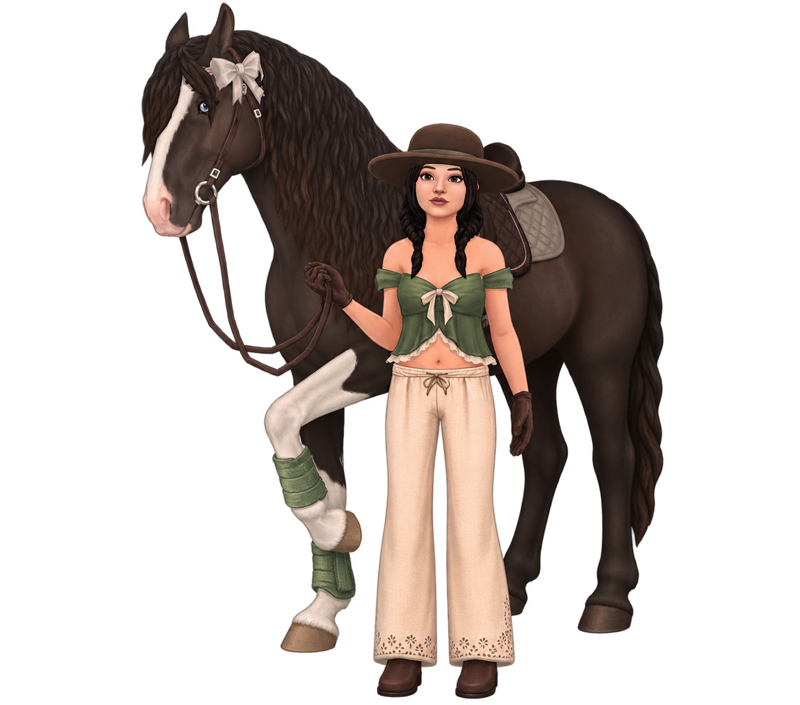

FAIRY FROGS · CLUB OUTFIT
Unser Cluboutfit
Natürlich, verspielt und harmonisch – passend zu unserem Feenteich und dem Fairy-Frogs-Vibe.

🐸 Pferd
- Dressursattel „Frühlingszeit“Eleganter Sattel für unseren natürlichen Fairycore-Look.
- Zaumzeug „Frühlingszeit“Passend zum Sattel in einem harmonischen Set.
- Sweet-Cream-SatteldeckeHeller, weicher Akzent für ein ruhiges Gesamtbild.
- Gamaschen „Erntezeit“Natürliche Grüntöne passend zum Clubtheme.
- Schleifen „Verspielte Waldrebe“Verspieltes Detail als Fairy-Frogs-Finish.
🐸 Reiter
- Top „Erntezeit“Grüner Oberteil-Look im Fairycore-Stil.
- Hose „Sommersonne“Helle Hose als sanfter Kontrast.
- Staubiger rostbrauner HutWarmer Naturton mit besonderem Charme.
- Amazona-ReitstiefelKlassisch und passend für den Gesamtlook.
- Handschuhe der LinedancerinFeines Accessoire für den finalen Touch.
Änderungen am Cluboutfit werden hier aktualisiert, sobald es neue Abstimmungen oder Anpassungen gibt.